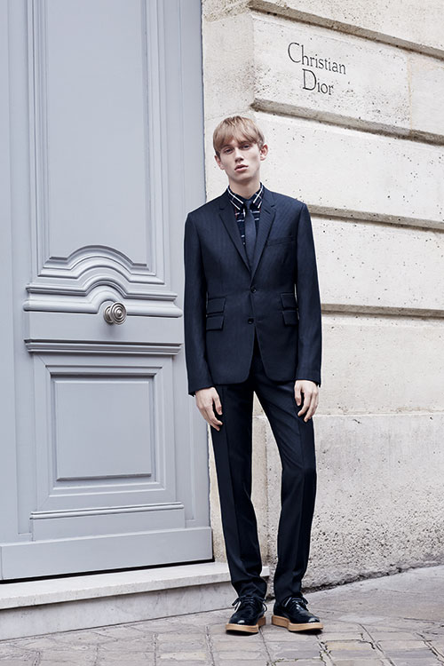
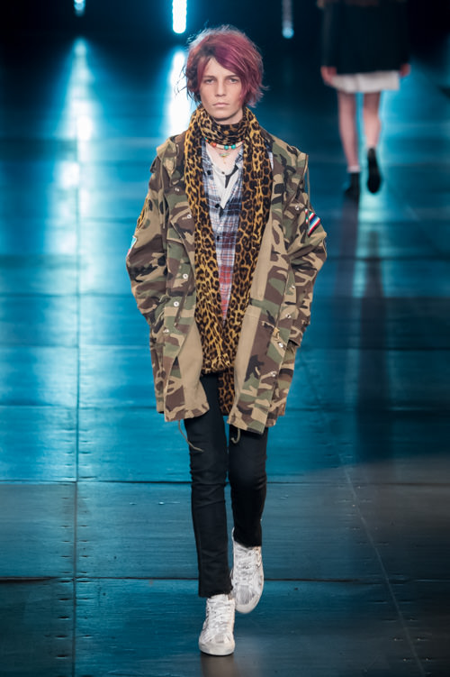
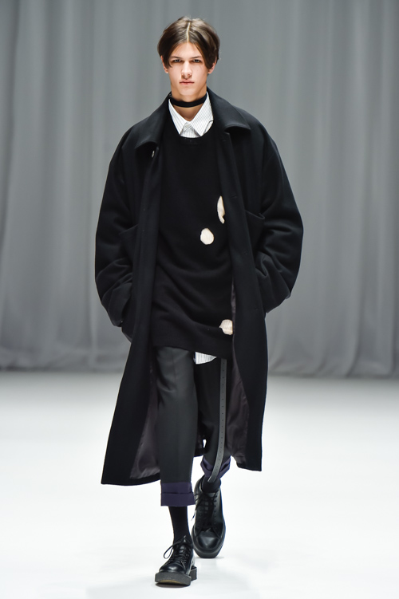
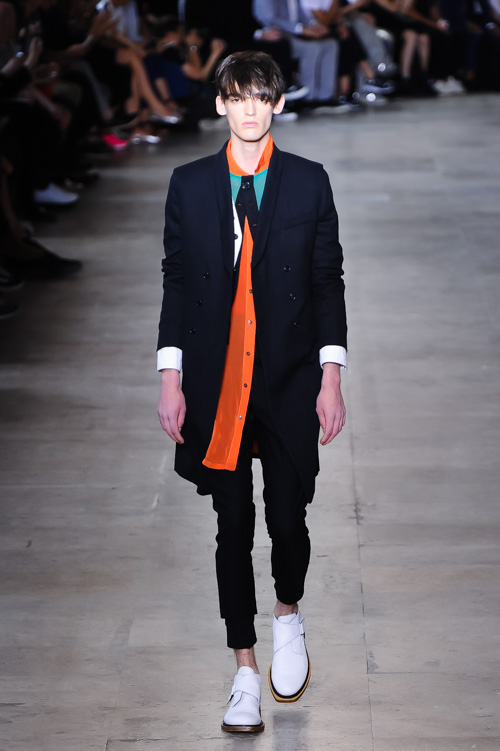

Dior Homme
{kind=link}
Dior Homme は、クリスチャン ディオールのメンズウェアラインとして発足したブランド。
黒を基調としたフォーマルなデザインと、細身のスタイルが特徴的である。
又、 Dior Homme のスタイルが世界のメゾンへ多大な影響を与えている。
2007年まではエディ・スリマンがディレクターであったが、現在はクリス・ヴァン・アッシュが務めている。
ちなみに、エディ・スリマンは後述のサンローランのデザイナーも務めたが、2016年には退任している。
彼が手がけたシーズンのアイテムは、中古であっても高値で取引され、非常に人気が高い。
SAINT LAURENT PARIS
{kind=link}
ムッシュ イヴ・サンローランによって設立されたブランド。
ストリートの感覚をラグジュアリーに昇華させることが多く、あまりいやらしさがないブランドと言えるだろう。
主なテーマはロックだが、"サンローランが好き"といっている人の大半は化粧品やバッグにしか興味がないので知らない人も多い。
モードの帝王と呼ばれたムッシュ イブ・サンローランは2008年に死去、紆余曲折があったが
2012年にデザイナーに就任したエディ・スリマンにより人気が再燃、現在はアンソニー ヴァカレロがデザイナーを務めている。
DRESSEDUNDRESSED
 DRESSEDUNDRESSEDは、都内セレクトショップでディレクター兼バイヤーとして活躍した、北澤武志と佐藤絵美子が2009年に設立したブランド。
二元性、対比性、対義性の結合をブランドのテーマとして掲げている。
ドメスティックブランドらしい美しいシルエットに加え、外すべきところは外している。
モードとストリートの融合や、ジェンダーレスなシルエットは男女二人のブランドだからこそできることであろう。
ブランド自体の歴史は浅いが、今後注目されるブランドかと思われる。
ANN DEMEULEMEESTER
{kind=link}
Ann Demeulemeester(アン ドゥムルメステール)は、ベルギーのデザイナー(同名)が夫のパトリックと共に立ち上げたブランド。
96年には、表参道ヒルズに店舗をオープンしている。これが当ブランドにおいて本国外初出展となった。
インターナショナルブランドの割に、ドメスティックライクなデザインが特徴的。
色使いとシルエットのバランスが美しい。
2013年には彼女がデザイナーを退任、退任後のデザインはセバスチャン・ムーニエを中心としたデザイナーチームが手がけている。